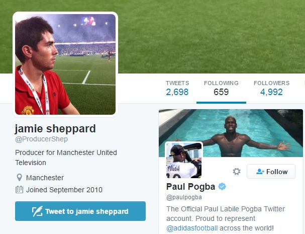

มีนัยยะ!ทีมงานสื่อผีกดติดตามทวิตเตอร์"ป็อกบา"
บรรดาทีมงานสื่อของ"ปีศาจแดง"แมนเชสเตอร์ ยูไนเต็ดบ่งบอกเป็นนัยถึงการย้ายทีมของพอล ป็อกบามิดฟิลด์ทีมชาติฝรั่งเศสจาก"ม้าลาย"ยูเวนตุสหลังต่างพากันกับติดตามทวิตเตอร์ของนักเตะ
เบน ฮิบบ์สผู้จัดการฝ่ายเนื้อหาดิจิตอล,แมนดี้ เฮนรี่ผู้ประกาศจาก เอ็มยูทีวี และเจมี่ เช็พเพิร์ดโปรดิวเซอร์ต่างกดติดตามทวิตเตอร์ของป็อกบาเติมเชื้อไฟข่าวการย้ายมาโอลด์ แทร็ฟฟอร์ด
เมื่อไม่นานมานี้มีการอ้างกันว่าป็อกบาจะเดินทางมา"เร้ด เดวิลส์" หลังกลับมาจากการพักร้อนและนี่อาจเป็นการที่สตาฟฟ์ของสโมสรเตรียมพร้อมสำหับการย้ายเข้ามาของเขา
การย้ายทีมดังกล่าวของป็อกบาถูกเล่นโดยสื่อมาตลอดช่วงซัมเมอร์นี้และท้ายที่สุดแฟนบอลของยอดทีมแห่งเมืองแมนเชสเตอร์อาจได้ย้ายมาสวมใส่เสื้อของยูไนเต็ดในอนาคตอันใกล้

Credit
www.soccersuck.com
Back